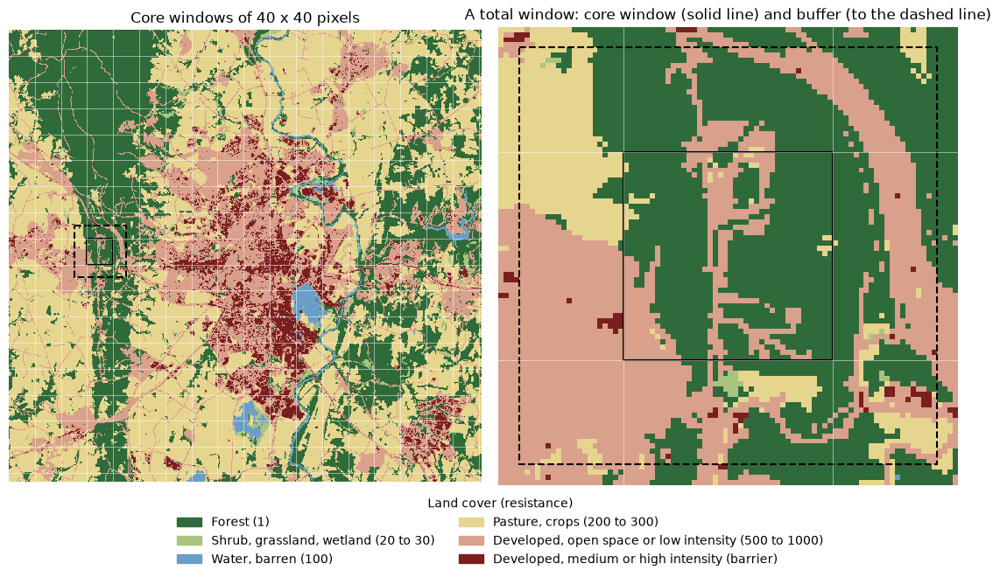
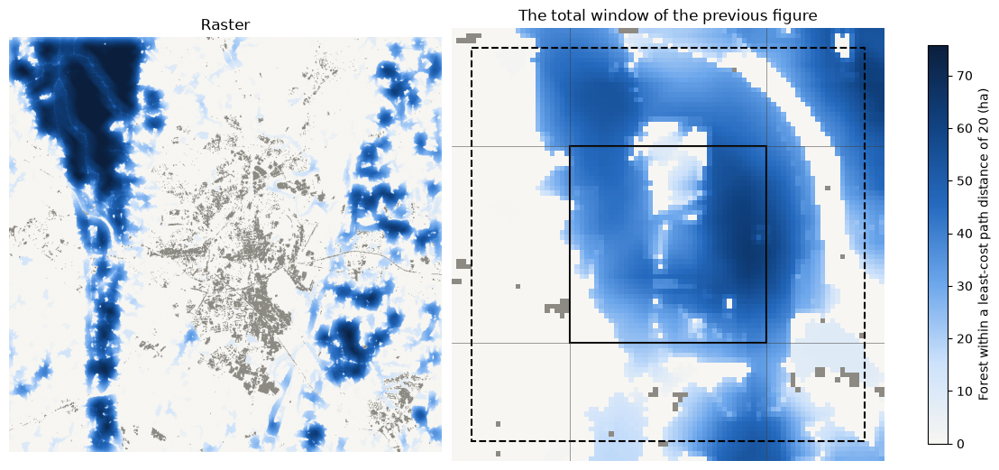

Moving-window operations¤
In many connectivity measures, the value of a pixel depends on the distances from this pixel to the pixels around it. Computed on the whole raster at once, these distances form a matrix with one row and one column per pixel, which exceeds the memory of common computers for rasters of a few hundred thousand pixels. A moving-window operation divides the raster into square core windows that tile it. The total window of a core window is the core window with a buffer of pixels on every side, so that neighbouring total windows overlap. A function computes the values of the pixels of a core window, its core pixels, from the pixels of its total window, and the core windows are assembled into the output raster. Memory then depends on the size of a total window, and computing time grows linearly with the number of pixels of the raster.
ConnectivityAnalysis and SensitivityAnalysis run moving-window operations internally, for one definition of connectivity. WindowOperation exposes the total windows, so that any function of a total window runs as a moving-window operation. This example computes the area of forest within a given least-cost path distance of each pixel, on the land cover of the connectivity analysis example, and processes the total windows one at a time, then in batches.
Theory: memory and cost of a moving-window operation
A raster of \(n\) pixels has \(n^2\) ordered pairs of pixels. For the \(n = 503{,}150\) pixels of the land cover below, the matrix of the distances between all pairs holds \(2.5 \times 10^{11}\) entries, 1 TB in single precision, and computing it takes at least one operation per entry.
A total window of core width \(w\) and buffer width \(b\) holds \((w + 2b)^2\) pixels. The distances from its \(w^2\) core pixels to all its pixels form a matrix of \(w^2 (w + 2b)^2\) entries, 41 MB in single precision for \(w = 40\) and \(b = 20\). The core windows of about \(n / w^2\) total windows tile the raster, so the moving-window operation computes about \(n (w + 2b)^2\) distances, a number linear in \(n\).
A core pixel lies at least \(b\) pixels from the edge of its total window along each axis. If the value of a pixel is a function of the pixels within \(b\) pixels of it along each axis alone, the moving-window operation returns the same raster as a computation on the whole raster.
Prerequisites¤
uv add jaxscape rasterio matplotlib
The example runs on CPU or GPU; see the installation instructions for NVIDIA GPUs.
import time
import urllib.request
from pathlib import Path
import jax
import jax.numpy as jnp
import matplotlib.pyplot as plt
import numpy as np
import rasterio
from jax import lax
from jaxscape import GridGraph, LCPDistance, padding, WindowOperation
from matplotlib.colors import LinearSegmentedColormap, ListedColormap
from matplotlib.patches import Patch, Rectangle
print(jax.devices()[0].device_kind)
NVIDIA GeForce RTX 3090
# Download the land cover raster if not already present
path = Path("../data/nlcd_2016_frederick_md.tif")
if not path.exists():
path.parent.mkdir(exist_ok=True)
urllib.request.urlretrieve(
"https://raw.githubusercontent.com/Circuitscape/datasets/main/data/"
"nlcd_2016_frederick_md.tif",
path,
)
Land cover, permeability and habitat¤
The raster holds the classes of the 2016 National Land Cover Database (NLCD) around Frederick, Maryland, in pixels of 30 m. As in the connectivity analysis example, each class is reclassified to a resistance with the table of Omniscape.jl's example.
- Permeability is the inverse of resistance: 1 in forest, from 1/1000 to 1/20 in other classes, and 0 in medium- and high-intensity development, which are barriers.
- Habitat quality is 1 in forest and 0 elsewhere.
with rasterio.open(path) as src:
landcover = src.read(1)
# Resistance of each land cover class, from Omniscape's example; inf for barriers
resistance_table = {
11: 100, # Open water
21: 500, # Developed, open space
22: 1000, # Developed, low intensity
23: np.inf, # Developed, medium intensity
24: np.inf, # Developed, high intensity
31: 100, # Barren land
41: 1, # Deciduous forest
42: 1, # Evergreen forest
43: 1, # Mixed forest
52: 20, # Shrub/scrub
71: 30, # Grassland/herbaceous
81: 200, # Pasture/hay
82: 300, # Cultivated crops
90: 20, # Woody wetlands
95: 30, # Emergent herbaceous wetlands
}
lookup = np.full(256, np.nan)
for nlcd_class, value in resistance_table.items():
lookup[nlcd_class] = value
resistance = lookup[landcover]
permeability = jnp.asarray(1 / resistance, dtype="float32") # 0 for barriers
quality = jnp.asarray(resistance == 1, dtype="float32") # Forest
barrier = np.isinf(resistance)
print(f"{quality.size:,} pixels: {quality.mean():.0%} forest")
print(f"{barrier.mean():.0%} barriers")
503,150 pixels: 26% forest
6% barriers
Core windows and total windows¤
The raster is divided into core windows, each at the centre of its total window. The buffer width \(b\) is set by the range of the computed value, and the core width \(w\) by the memory available for one total window.
Here, the value of a pixel is the area of forest within a least-cost path distance \(d_\text{max} = 20\) of it, the cost of 20 steps between forest pixels (600 m). The buffer is \(b = d_\text{max} = 20\) pixels wide (see the theory box of the next section). With core windows of \(w = 40\) pixels, the total windows have 80 x 80 pixels.
WindowOperation requires the height and the width of the raster, minus \(2b\), to be multiples of \(w\). The rasters are padded with \(b\) pixels on every side, so that every pixel of the raster lies in a core window, then padding pads their bottom and right edges to the next multiple. Padding pixels have permeability 0 and quality 0.
d_max = 20 # Least-cost path distance within which forest is counted
buffer_size = d_max # Buffer width b, in pixels
window_size = 40 # Core width w, in pixels
def pad(raster):
# b pixels on every side, then the bottom and right edges to fit the cores
return padding(jnp.pad(raster, buffer_size), buffer_size, window_size)
permeability_padded = pad(permeability)
quality_padded = pad(quality)
window_op = WindowOperation(
shape=permeability_padded.shape, window_size=window_size, buffer_size=buffer_size
)
height, width = quality.shape
side = window_op.total_window_size
print(f"Raster of {height} x {width} pixels, padded to {quality_padded.shape}")
print(f"{window_op.nb_steps} total windows of {side} x {side} pixels")
Raster of 694 x 725 pixels, padded to (760, 800)
342 total windows of 80 x 80 pixels
groups = {
"Forest (1)": ([41, 42, 43], "#2f6b3a"),
"Shrub, grassland, wetland (20 to 30)": ([52, 71, 90, 95], "#a9c47f"),
"Water, barren (100)": ([11, 31], "#6a9ec9"),
"Pasture, crops (200 to 300)": ([81, 82], "#e6d58f"),
"Developed, open space or low intensity (500 to 1000)": ([21, 22], "#d9a08b"),
"Developed, medium or high intensity (barrier)": ([23, 24], "#7a1f1f"),
}
group = np.zeros(landcover.shape, int)
for index, (classes, _) in enumerate(groups.values()):
group[np.isin(landcover, classes)] = index
landcover_cmap = ListedColormap([color for _, color in groups.values()])
# The total window shown in detail: that of the core window in row `i` and
# column `j`
i, j = 8, 3
w, b = window_size, buffer_size
def draw_windows(ax, color):
# Edges of the core windows, then the core window and the total window in
# row i and column j
for row in range(w, height, w):
ax.axhline(row - 0.5, color=color, linewidth=0.5, alpha=0.7)
for column in range(w, width, w):
ax.axvline(column - 0.5, color=color, linewidth=0.5, alpha=0.7)
for offset, style in [(0, "-"), (b, "--")]:
top, left = i * w - offset - 0.5, j * w - offset - 0.5
ax.add_patch(
Rectangle(
(left, top),
w + 2 * offset,
w + 2 * offset,
fill=False,
edgecolor="black",
linewidth=1.5,
linestyle=style,
)
)
def zoom(ax, margin=4):
# The total window in row i and column j, with a margin
edge = b + margin + 0.5
ax.set_xlim(j * w - edge, (j + 1) * w + edge - 1)
ax.set_ylim((i + 1) * w + edge - 1, i * w - edge)
fig, axs = plt.subplots(1, 2, figsize=(11, 6.5), layout="constrained")
for ax in axs:
ax.imshow(group, cmap=landcover_cmap, interpolation="nearest")
draw_windows(ax, color="white")
ax.axis("off")
zoom(axs[1])
axs[0].set_title(f"Core windows of {w} x {w} pixels")
axs[1].set_title(
"A total window: core window (solid line) and buffer (to the dashed line)"
)
handles = [Patch(color=color, label=name) for name, (_, color) in groups.items()]
fig.legend(
handles=handles,
title="Land cover (resistance)",
loc="outside lower center",
ncols=2,
frameon=False,
)
plt.show()

Reachable forest in one total window¤
The function computed in each total window gives, for each core pixel, the area of forest within a least-cost path distance \(d_\text{max}\) of it.
A GridGraph is built from the permeability of a total window: its edges join each pixel to its four neighbours, and the conductance of an edge is the mean permeability of its two pixels. LCPDistance computes least-cost path distances, where the cost of an edge of conductance \(a\) is \(1/a\). Its method sources_to_windows_distance returns the distances from each core pixel to the pixels of the square of side \(2 d_\text{max} + 1\) centred on it, its window. The function counts the forest pixels of each window at a distance of at most \(d_\text{max}\), and multiplies the count by the area of a pixel, 0.09 hectares (ha).
Theory: why the moving-window result is exact
Permeability is at most 1, so the cost of every edge is at least 1, the cost of a step between two forest pixels. A path of cost at most \(d_\text{max}\) therefore has at most \(d_\text{max}\) edges, and stays within \(d_\text{max}\) pixels of its source along each axis. With \(b \geq d_\text{max}\), every such path from a core pixel lies inside the total window and inside the window of the pixel. Least-cost path distances on the graph of the total window then equal those on the graph of the whole raster wherever the latter are at most \(d_\text{max}\), and exceed \(d_\text{max}\) elsewhere: the moving-window operation returns the same raster as a computation on the whole raster.
The resistance distance depends on all paths between two pixels, including those that leave the total window, and has no such bound. For such distances, with a wider buffer, the error of the moving-window operation is smaller and its cost larger.
distance = LCPDistance()
size = 2 * d_max + 1 # Side of the window of a pixel
pixel_area = 0.09 # Hectares, for pixels of 30 m
def average(x, y):
return (x + y) / 2
def reachable_forest(permeability, quality, rows, columns):
# Area of forest, in hectares, within a least-cost path distance d_max of
# the pixels at `rows` and `columns`
graph = GridGraph(permeability, fun=average)
sources = graph.coord_to_index(rows, columns)
distances = distance.sources_to_windows_distance(graph, sources, size)
forest = jax.vmap(
lambda row, column: lax.dynamic_slice(
quality, (row - d_max, column - d_max), (size, size)
)
)(rows, columns)
return pixel_area * jnp.sum((distances <= d_max) * forest, axis=(1, 2))
# Rows and columns of the core pixels in a total window
core = jnp.arange(buffer_size, buffer_size + window_size)
core_rows, core_columns = (x.ravel() for x in jnp.meshgrid(core, core, indexing="ij"))
@jax.jit
def process_window(permeability_window, quality_window):
area = reachable_forest(
permeability_window, quality_window, core_rows, core_columns
)
# A raster of the shape of the total window, whose buffer the update discards
return jnp.pad(area.reshape(window_size, window_size), buffer_size)
Processing total windows one at a time¤
lazy_iterator yields the total windows of a raster one at a time, with the row and column xy of their top-left pixel in the padded raster. extract_total_window extracts the total window of the quality raster at the same position, and update_raster_with_core_window writes the core window of the result into the output raster. The distances of one total window, from 1,600 core pixels to 6,400 pixels, take 41 MB. The time below includes the compilation of process_window.
start = time.perf_counter()
lazy = jnp.zeros_like(quality_padded)
for xy, permeability_window in window_op.lazy_iterator(permeability_padded):
quality_window = window_op.extract_total_window(xy, quality_padded)
result = process_window(permeability_window, quality_window)
lazy = window_op.update_raster_with_core_window(xy, lazy, result)
lazy = jax.block_until_ready(lazy)
elapsed = time.perf_counter() - start
print(f"{window_op.nb_steps} total windows, one at a time: {elapsed:.1f} s")
342 total windows, one at a time: 10.5 s
Processing total windows in batches¤
eager_iterator returns all total windows of a raster at once, in an array of shape (total windows, w + 2b, w + 2b), with their positions, for functions that process many total windows in one program. jax.lax.map with batch_size=32 applies process_window, vectorized with jax.vmap, to batches of 32 total windows. Memory holds all total windows, about \((1 + 2b/w)^2 = 4\) times the padded raster, and the distances of one batch, 1.3 GB. The time below includes compilation.
start = time.perf_counter()
xy, permeability_windows = window_op.eager_iterator(permeability_padded)
_, quality_windows = window_op.eager_iterator(quality_padded)
results = lax.map(
lambda windows: process_window(*windows),
(permeability_windows, quality_windows),
batch_size=32,
)
eager = jnp.zeros_like(quality_padded)
for xy_window, result in zip(xy, results):
eager = window_op.update_raster_with_core_window(xy_window, eager, result)
eager = jax.block_until_ready(eager)
elapsed = time.perf_counter() - start
print(f"Total windows of shape {permeability_windows.shape}")
print(f"{window_op.nb_steps} total windows, in batches of 32: {elapsed:.1f} s")
print(f"Largest difference between the two rasters: {jnp.max(jnp.abs(eager - lazy))}")
Total windows of shape (342, 80, 80)
342 total windows, in batches of 32: 15.6 s
Largest difference between the two rasters: 0.0
Both times include compilation, of a program for one total window and of a program for a batch, so they do not compare the two ways of processing total windows once compiled. LCPDistance iterates until no distance changes; under jax.vmap, it iterates on all total windows of a batch until the last of them has converged.
Reachable forest map¤
Cropping the padding gives the area of forest within a least-cost path distance \(d_\text{max}\) of each pixel. Its largest possible value, 75.7 ha, is the area of the 841 pixels within 20 steps of a pixel along the grid, when all are forest.
reachable = np.asarray(eager[b : b + height, b : b + width])
sequential = LinearSegmentedColormap.from_list(
"sequential", ["#f7f6f2", "#cde2fb", "#6da7ec", "#256abf", "#104281", "#0b1f3d"]
)
grey = ListedColormap(["#8c8a83"])
largest = pixel_area * (2 * d_max * (d_max + 1) + 1) # 841 forest pixels
fig, axs = plt.subplots(1, 2, figsize=(11, 5.6), layout="constrained")
for ax in axs:
image = ax.imshow(
reachable, cmap=sequential, vmin=0, vmax=largest, interpolation_stage="rgba"
)
ax.imshow(
np.ma.masked_where(~barrier, barrier), cmap=grey, interpolation_stage="rgba"
)
ax.axis("off")
draw_windows(axs[1], color="#3d3d3a")
zoom(axs[1])
axs[0].set_title("Raster")
axs[1].set_title("The total window of the previous figure")
label = f"Forest within a least-cost path distance of {d_max} (ha)"
fig.colorbar(image, ax=axs, shrink=0.8, label=label)
plt.show()

Forest interiors have the largest areas; the roads and streams that cut through forest, and the edges of small or narrow patches, have less. Outside forest, only the pixels next to forest have any: a step between forest and another class costs about 2, and a step between two pixels of other classes costs at least 20. The values are continuous across the edges of the core windows, as the buffer contains every path of cost at most \(d_\text{max}\) from a core pixel.
Check against the whole raster¤
On the graph of the whole raster, the distances from all 503,150 pixels do not fit in memory; those from a sample of 200 forest pixels do. The same function computes their values on the graph of the whole raster, for comparison with the moving-window raster.
rng = np.random.default_rng(0)
inside = np.zeros(quality.shape, bool)
inside[d_max:-d_max, d_max:-d_max] = True # Windows inside the raster
rows, columns = np.nonzero((np.asarray(quality) == 1) & inside)
sample = rng.choice(rows.size, size=200, replace=False)
rows, columns = rows[sample], columns[sample]
start = time.perf_counter()
area = jax.jit(reachable_forest)(
permeability, quality, jnp.asarray(rows), jnp.asarray(columns)
)
area = np.asarray(jax.block_until_ready(area))
elapsed = time.perf_counter() - start
print(f"200 pixels on the graph of the whole raster: {elapsed:.1f} s")
print(f"Largest difference: {np.max(np.abs(area - reachable[rows, columns]))}")
200 pixels on the graph of the whole raster: 25.5 s
Largest difference: 0.0